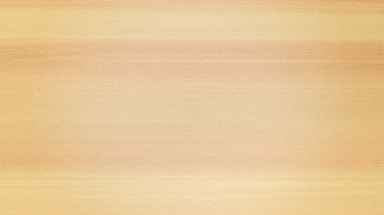
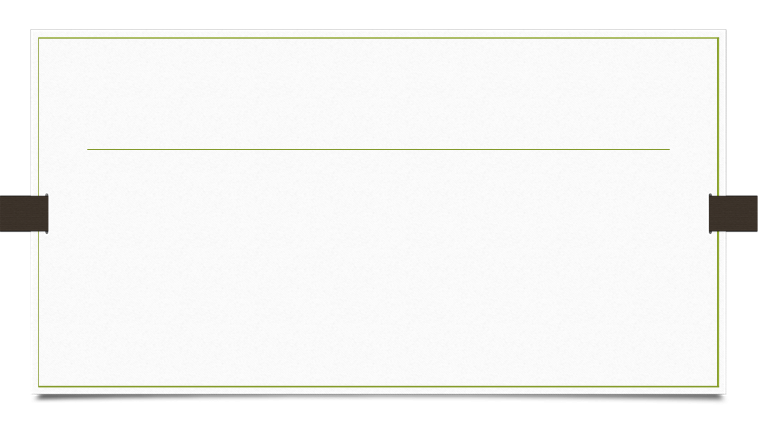

Step 6:
Creating
•
Students can blend the concept with other information, generating their own
thoughts, ideas, viewpoints, and positions.
•
Creating is focused on originality.
•
Isn’t necessarily an art project, like “write a story about apartheid.”